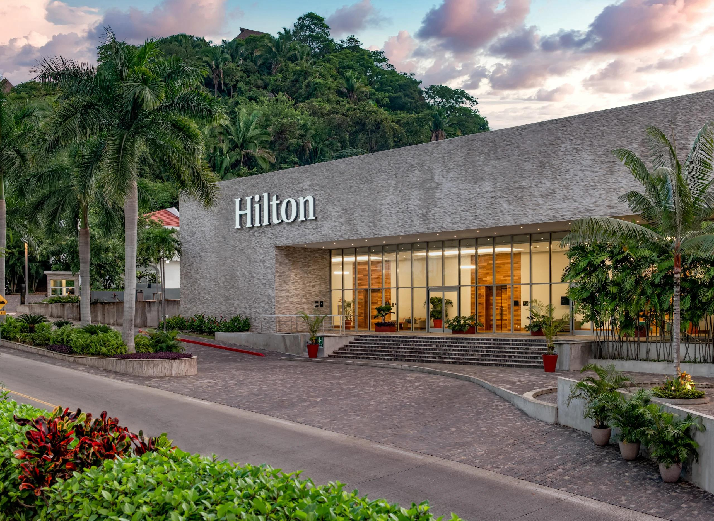
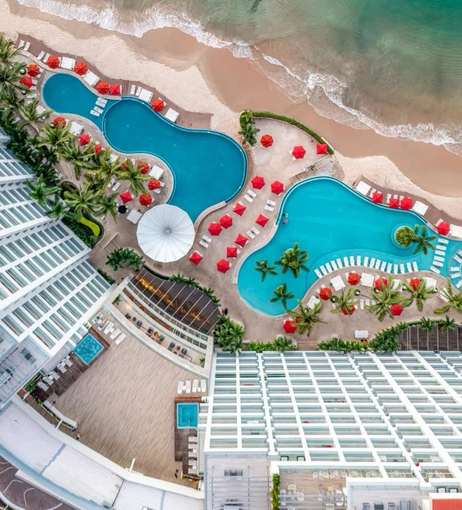
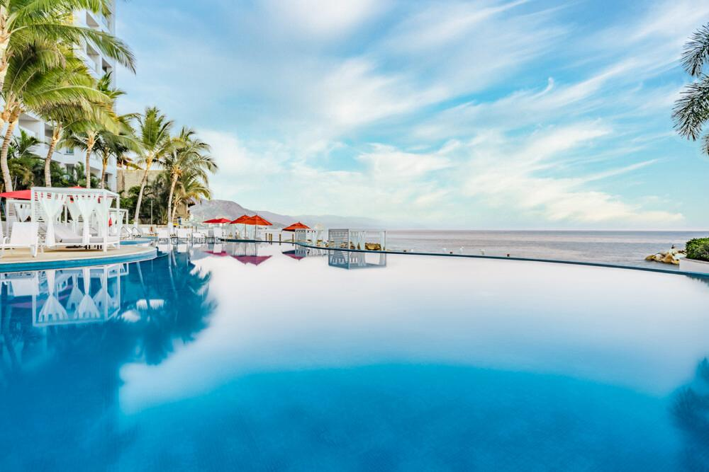
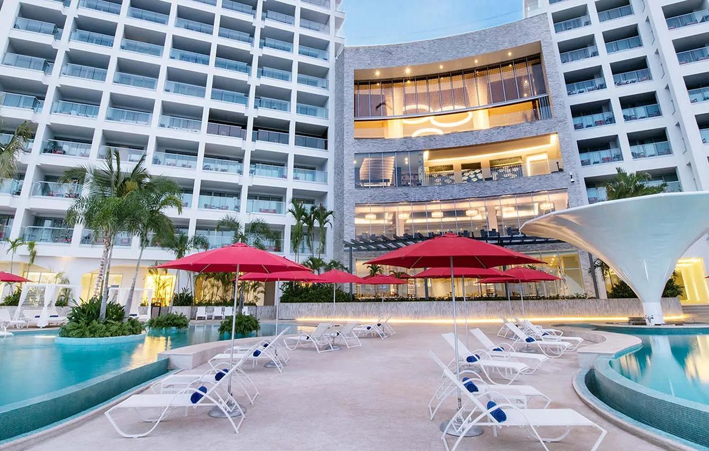

El evento “The Hilton Vallarta Riviera Experience en CDMX” fue una experiencia inolvidable que reunió a personas de diferentes rincones para disfrutar de la exclusividad y el lujo que solo un destino como el Hilton Vallarta Riviera All-Inclusive Resort puede ofrecer.
Este resort, ubicado en la impresionante costa del Pacífico mexicano, combina a la perfección la belleza natural de la región con un servicio de clase mundial. Durante el evento, los asistentes pudieron sumergirse en un complejo de experiencias únicas, diseñadas para reflejar el confort y la cálida hospitalidad que han hecho famosa a la marca Hilton a nivel global.
Fue una celebración que no solo destacó por su elegancia y sofisticación, sino también por la oportunidad de conocer más sobre lo que hace tan especial a este paraíso frente al mar, dejando en todos los presentes un recuerdo imborrable de lujo, relajación y excelente trato. Entre comida, bebidas, masajes y experiencias.
“Entre arena, playa, flores y ceviches Hilton Puerto Vallarta nos lleva a diferentes placeres comento Mónica González”
Ya que Puerto Vallarta se ha convertido en uno de los destinos turísticos más populares del país. Tan solo al cierre de 2024, según datos del Fideicomiso de Turismo de la ciudad, durante el periodo comprendido entre el 16 y el 30 de diciembre, el destino registró una ocupación hotelera promedio del 85%. Durante el año pasado, Puerto Vallarta superó los 6 millones de turistas, en donde 548 mil arribaron vía cruceros y 5.5 millones lo hicieron por vía aérea.
Hilton Vallarta Riviera All-Inclusive Resort no es ajeno a este crecimiento, ya que en 2024 recibió creció 10% en 2024 respecto de 2023 en su número de huéspedes. Es así como “The Hilton Vallarta Riviera Experience en CDMX” llega como un evento inmersivo con el objetivo de transportar a los asistentes a la esencia vibrante y sofisticada del hotel, sin salir de la ciudad.
“En Hilton Vallarta Riviera, cada detalle está diseñado para brindar una experiencia única, donde la belleza natural del Pacífico mexicano se encuentra con la hospitalidad de clase mundial, creando recuerdos que perduran toda la vida. menciono Mónica González”>
Al respecto, Mónica González, Directora de Ventas y Mercadotecnia Hilton Vallarta Riviera All-Inclusive Resort, señala: “Se trata de una experiencia sensorial única que captura la magia de Puerto Vallarta a través de sus colores, aromas, sabores y emociones, recreando la esencia de la hospitalidad que nos distingue como destino”.
Es así como “The Hilton Vallarta Riviera Experience en CDMX” trajo la playa a la capital del país con contenido clave y diferenciador, con una vivencia inmersiva que reflejó el lujo y la hospitalidad de Hilton Vallarta Riviera All-Inclusive Resort, donde los asistentes experimentaron colores, aromas, sabores y sonidos que los transportaron a Puerto Vallarta. Igualmente, puso en boca de sus invitados gastronomía de clase mundial así como networking exclusivo, en donde líderes del sector turístico, empresarios y prensa, disfrutaron de esta plataforma para generar nuevas conexiones estratégicas.